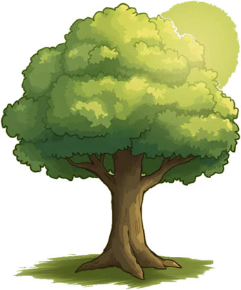

Süre doldu. Akıştaysan durma.
Odak duraklar — ağacın güvende
Birden fazlasını aynı anda açıp karıştırabilirsin
Sürükleyerek taşı · iki parmakla yakınlaştır
Detay için bir güne dokun
Reklam yükleniyor…
Kendi tempon: kaç dakika çalışıp kaç dakika mola vereceğini sen belirle.
Seans
Uygulama